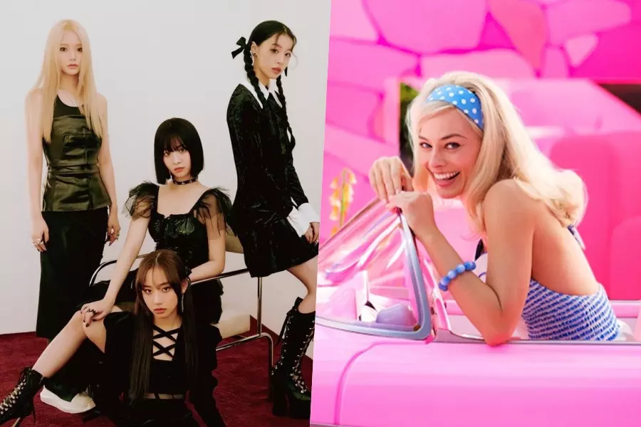
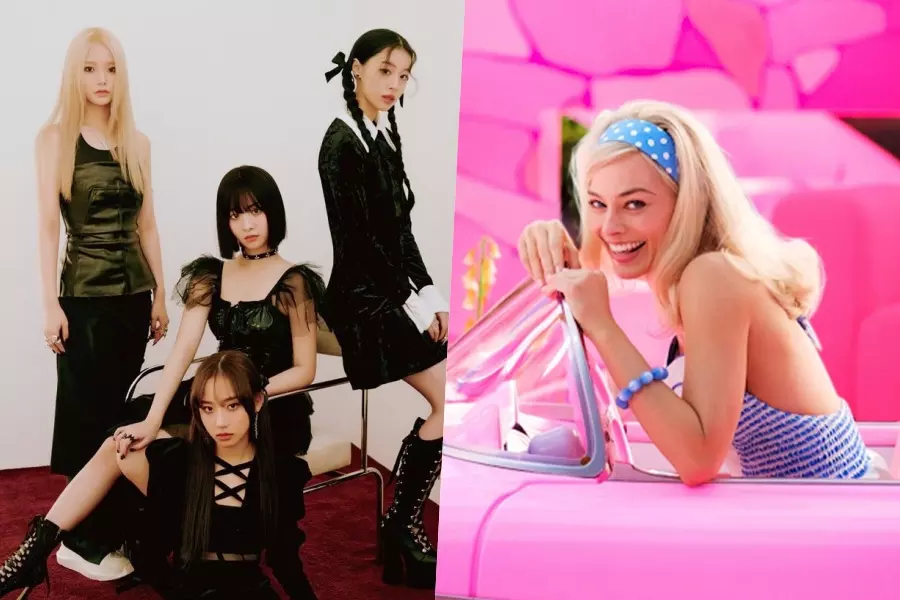

CNN Indonesia
Sabtu, 08 Jul 2023 01:20 WIB
Jakarta, CNN Indonesia -- FIFTY FIFTY resmi merilis Barbie Dreams yang menjadi salah satu original soundtrack
film Barbie pada Jumat (7/7). Barbie Dreams dirilis dalam bentuk video lirik di YouTube resmi FIFTY FIFTY.
Tak hanya itu, lagu hasil kolaborasi bersama Kaliii itu juga sudah dirilis di layanan streaming musik, seperti Spotify.
Barbie Dreams merupakan hasil transformasi Together Again yang dipopulerkan Janet Jackson menjadi sebuah lagu
electro-pop yang begitu bubbly mencerminkan energi film Barbie. "When I close my eyes, it's a fantasy / Perfect plastic
life from a magazine / Then when I wake up, it's reality / I can have it all / live my Barbie dreams,"
nyanyian mereka di bagian chorus.Kaliii meramaikan lagu itu lewat rap untuk salah satu verse Barbie Dreams.

CNN Indonesia
Sabtu, 08 Jul 2023 01:20 WIB
"Ken gon' spend 'cause I'm a ten / Pink Corvette, let's paint the rims / I give looks and set the trends
/ We all look good, it's me and friends." Lagu tersebut dirilis di tengah perseteruan FIFTY FIFTY bersama agensinya,
ATTRAKT, yang menyeret produser musik Cupid SIAHN hingga Warner Music Korea. Video lirik itu juga dirilis dua hari
setelah ATTRAKT mengonfirmasi belum dapat melakukan pengambilan gambar untuk video musik Barbie Dreams.
Agensi mengatakan hal itu disebabkan kondisi member, Aran, masih dalam pemulihan.
"Itu benar saat ini kami belum bisa syuting video musik untuk OST Barbie," kata ATTRAKT seperti diberitakan
Hankook Ilbo pada Selasa (4/7). "Aran sempat sakit dan menjalani operasi, dia membutuhkan dua bulan pemulihan,
sehingga kami tidak bisa menjadwalkan syuting MV. Kemudian situasi seperti saat ini terjadi, sehingga jadi sulit
(untuk syuting)."

"Ken gon' spend 'cause I'm a ten / Pink Corvette, let's paint the rims / I give looks and set the trends / We all look good, it's me and friends." Lagu tersebut dirilis di tengah perseteruan FIFTY FIFTY bersama agensinya, ATTRAKT, yang menyeret produser musik Cupid SIAHN hingga Warner Music Korea. Video lirik itu juga dirilis dua hari setelah ATTRAKT mengonfirmasi belum dapat melakukan pengambilan gambar untuk video musik Barbie Dreams. Agensi mengatakan hal itu disebabkan kondisi member, Aran, masih dalam pemulihan.
"Itu benar saat ini kami belum bisa syuting video musik untuk OST Barbie," kata ATTRAKT seperti diberitakan Hankook Ilbo pada Selasa (4/7). "Aran sempat sakit dan menjalani operasi, dia membutuhkan dua bulan pemulihan, sehingga kami tidak bisa menjadwalkan syuting MV. Kemudian situasi seperti saat ini terjadi, sehingga jadi sulit (untuk syuting)."
CNN Indonesia
Sabtu, 08 Jul 2023 01:20 WIB
"Ken gon' spend 'cause I'm a ten / Pink Corvette, let's paint the rims / I give looks and set the trends / We all look good, it's me and friends." Lagu tersebut dirilis di tengah perseteruan FIFTY FIFTY bersama agensinya, ATTRAKT, yang menyeret produser musik Cupid SIAHN hingga Warner Music Korea. Video lirik itu juga dirilis dua hari setelah ATTRAKT mengonfirmasi belum dapat melakukan pengambilan gambar untuk video musik Barbie Dreams. Agensi mengatakan hal itu disebabkan kondisi member, Aran, masih dalam pemulihan.
"Itu benar saat ini kami belum bisa syuting video musik untuk OST Barbie," kata ATTRAKT seperti diberitakan Hankook Ilbo pada Selasa (4/7). "Aran sempat sakit dan menjalani operasi, dia membutuhkan dua bulan pemulihan, sehingga kami tidak bisa menjadwalkan syuting MV. Kemudian situasi seperti saat ini terjadi, sehingga jadi sulit (untuk syuting)."